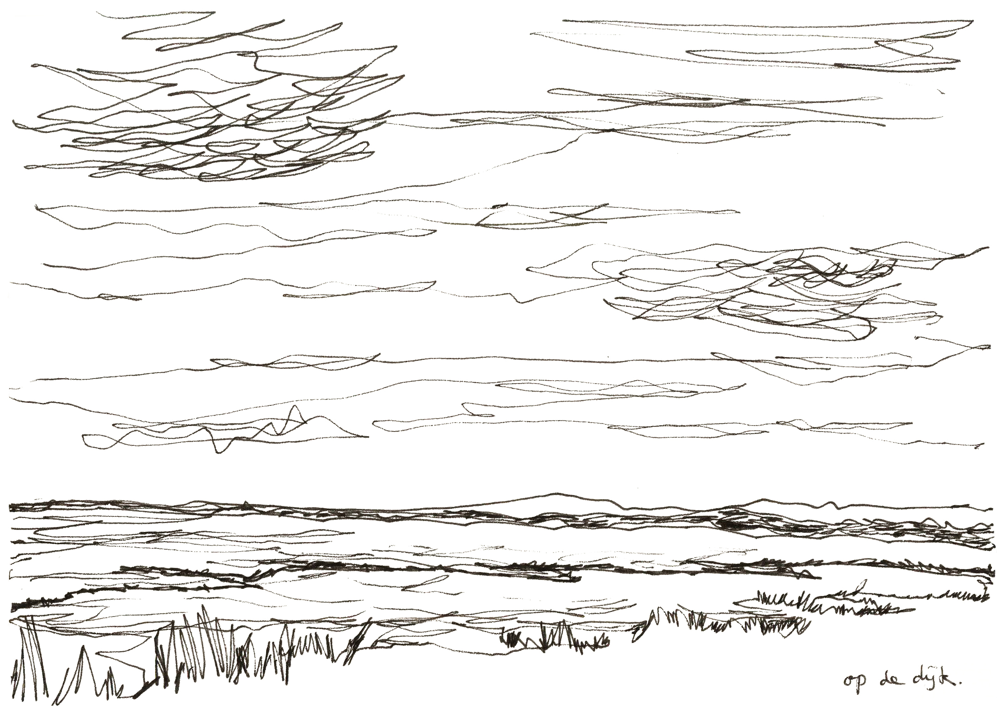
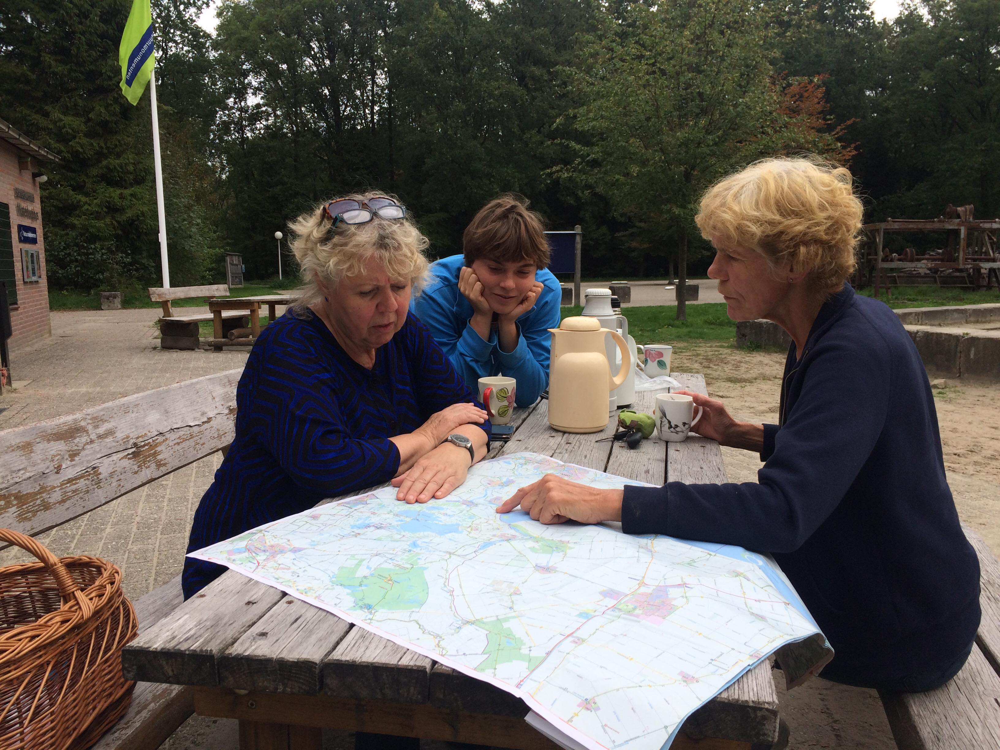
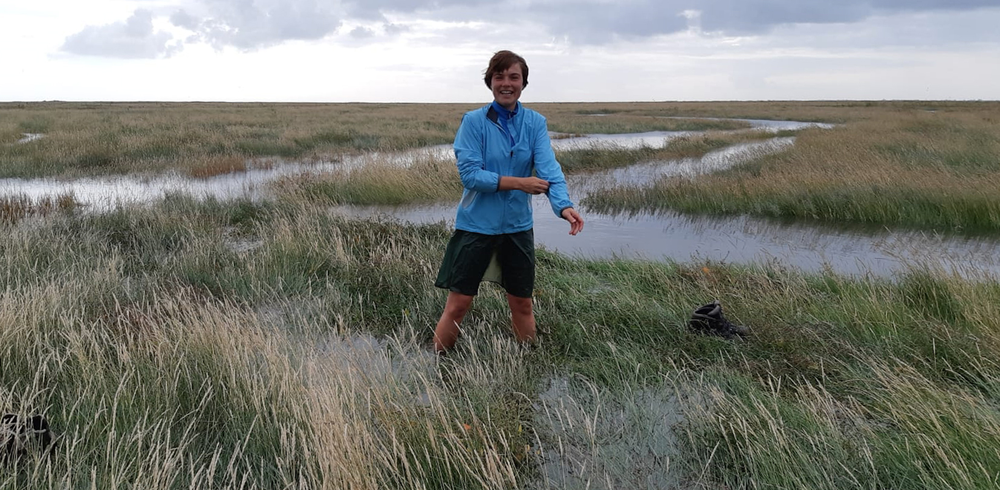

I could have been at the beach right now
In this extended research project, I immersed into an hypothetical future landscape. With one-third of the country's land situated under the level of the ocean, the Netherlands should fear climate change induced rising sea-levels. To experience these possible future landscapes, I placed myself in the landscapes that possibly fear a future in which the waves of the ocean devour the land. Meaning, I walked the 700 kilometres that topographically seperate the Netherlands into high and low regions. On the walk, I used my body and my imagination to construct a new image that keeps up with the changing climate and therefore the changing land. In the second part of the project, my experiences manifest themselves in a multimedia installation. The installation not only represents the physical spaces, it also represents a constructed image that was developed on the walk for those physical spaces.






